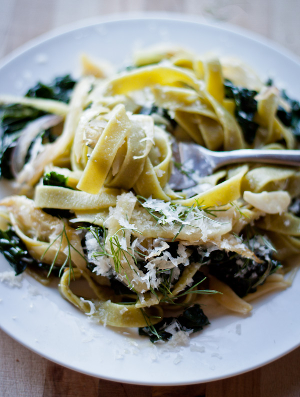

Fennel Pasta

Description
This dish combines sauteed onion, fennel, lacinato kale, lots of garlic, some red pepper flakes, and is finished with a good squeeze of fresh lemon juice. It's simple, but delicious.
It is the kind of meal that can be made in the amount of time it takes to bring a large pot of water to a boil and cook the pasta. That's always nice, right?
Ingredients
- 2 to 3 tablespoons extra virgin olive oil
- 1.5 large red onion, thinly sliced
- 2 Fennel bulbs, thinly sliced
- 3 Large garlic cloves, finely slivered
- 2-3 large pinches red pepper flakes
- 1 large bunch of lacinato kale
- Juice of one lemon
- 10 ounces of spinach fettuccine
- Kosher salt
- Freshly ground black pepper
Garnishes
- Grated Parmigiano-Reggiano cheese
- Fennel fronds
- Chili pepper oil
Steps
- Put a large pot of well-salted water on to boil. Heat the olive oil in a large frying pan over low heat. Add the onion and cook gently for 5 minutes, or until the onions are beginning to soften.
- Turn up the heat to medium, add the sliced fennel, and saute gently for an additional 6 to 8 minutes or until the fennel is tender and slightly caramelized. Add the garlic and red pepper flakes and continue to cook, stirring frequently, for another minute or two. Turn off the heat.
- When the fennel is almost cooked, add the pasta to the pan of boiling water and cook until al dente, adding the kale to the pasta pot about 2 to 3 minutes before the pasta is done cooking.
- Drain the pasta (reserving ½ cup of the starchy cooking water) and greens thoroughly and toss with the onion and fennel mixture in the pan - adding pasta water if necessary. Add the lemon juice, season with salt and pepper, and serve immediately.
- Drizzle each serving with chile oil, fennel fronds, and lots of grated parmigiano-reggiano cheese.